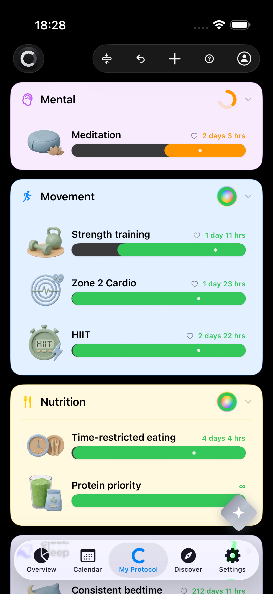
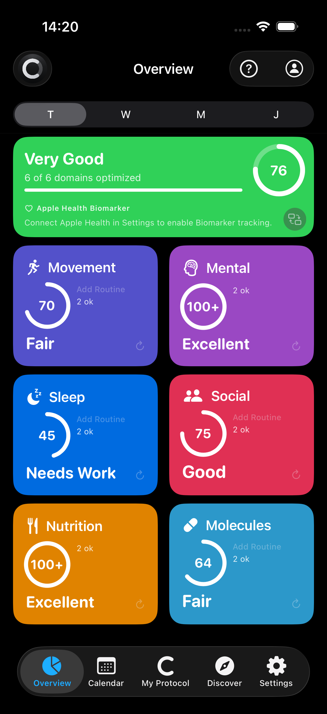
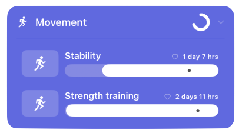
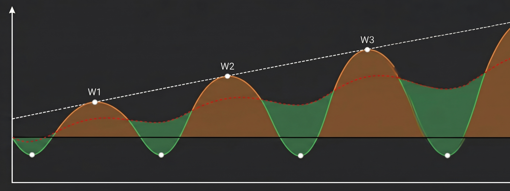
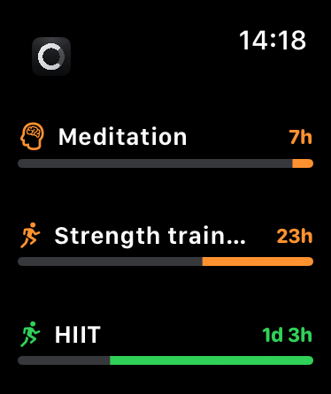

Longevity, made routine.
circady turns the science of healthy aging into curated protocols you can actually follow — timed to your body's natural recovery cycles.


Know exactly what to do
You don't need to read every longevity book. circady distils 20 proven protocols into clear routines — and tells you when each one belongs in your week.
- Evidence-based routines across movement, nutrition, sleep, mind, social life and molecules.
- Timed around recovery, so your effort actually turns into progress.
- Compare 20 longevity protocols and keep what fits you.
- Never more than your body — or your week — can absorb.

Build muscle on the supercompensation curve
Train hard, recover, then hit the sweet spot — not too early, not too late. circady models the supercompensation curve for hypertrophy, so every session lands when your body is ready to grow.
- Tune the recovery and sweet-spot windows to your own training.
- See every cycle: stimulus, recovery dip, supercompensation peak.
- Repeat it right and adaptation compounds — cycle after cycle.

After a hard training stimulus, your performance first dips while your body recovers. It then rebounds above the starting level — this overshoot is supercompensation. Train again right at that peak and the gains stack up; too early or too late, and progress stalls.
Or design it entirely your way
Templates not your thing? Build routines from scratch — your own protocols, your timing, your goals. circady bends to your life, not the other way around.
- Create unlimited custom routines, named and organised your way.
- Set the cadence yourself — daily habits or longer recovery cycles.
- Mix curated protocols with your own into one coherent plan.
circady on Apple Watch
Take your routines with you. circady on Apple Watch shows today's plan and lets you log routines right from your wrist — no phone needed.
- See today's routines and your domain scores at a glance.
- Log, skip or complete a routine with a single tap.
- Stays in sync with your iPhone automatically.

Start your longevity routine
circady is coming to the App Store. Scan the code or use the badge below to download — soon on iPhone.